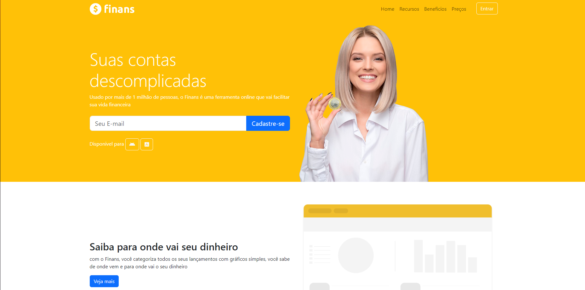
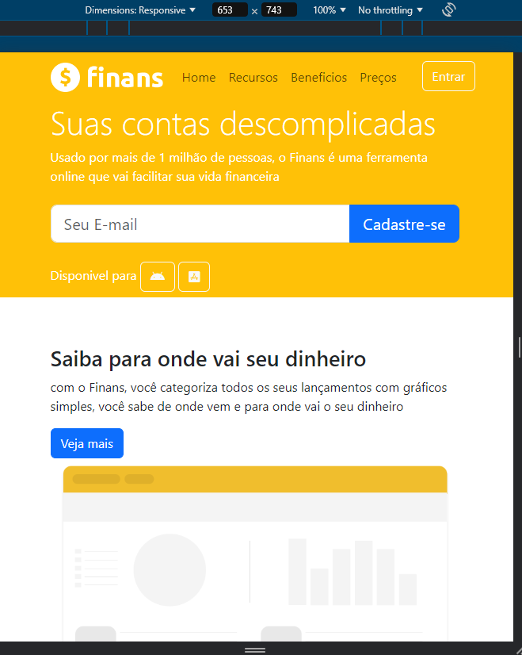
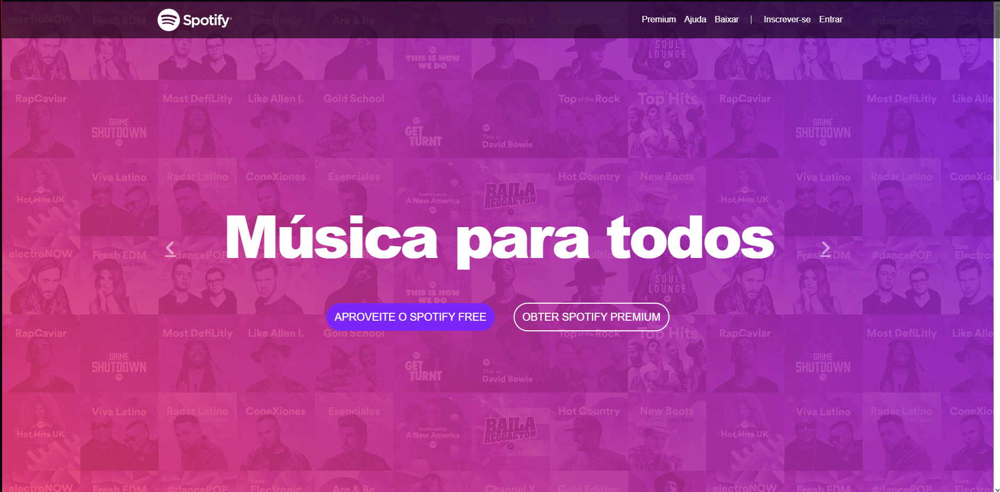
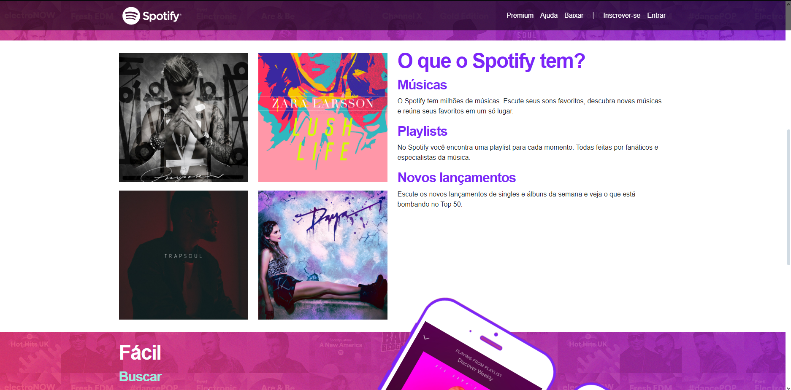
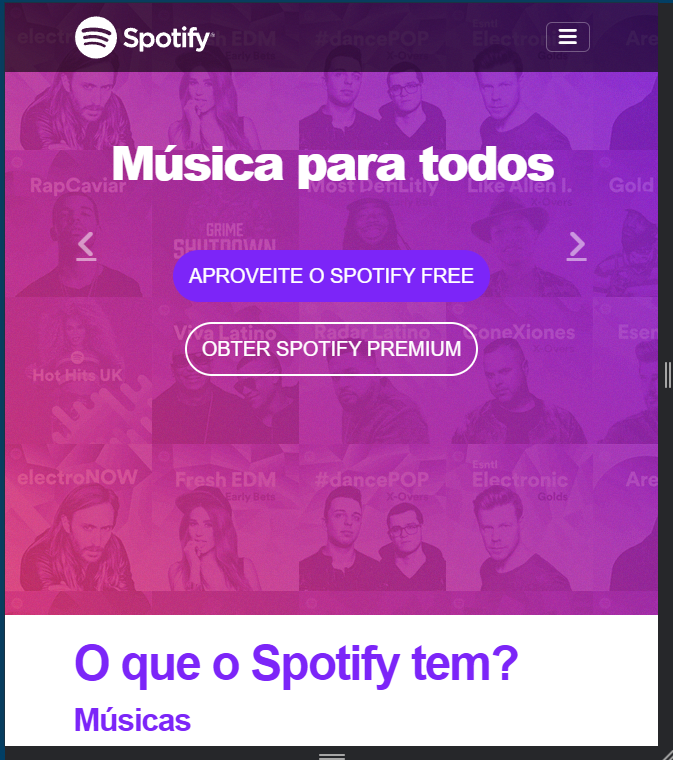

Projetos Bootstrap
My first project using Bootstrap will involve creating a collection of code snippets to solidify my understanding of the framework.

Click here to open the site
For my first mobile-first responsive project, I will be building a website for a fictional finance app named Finans.

 Click here to open the site
My second project focusing on mobile-first responsive design will be recreating Spotify's older homepage design.
  
Click here to open the site